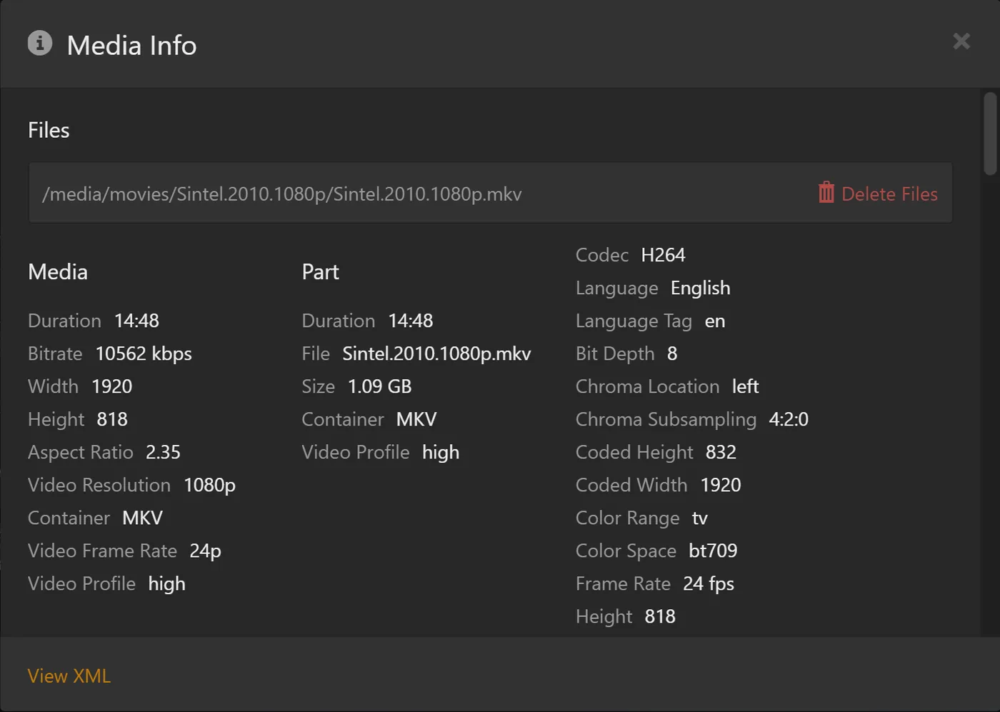

Bring your watch history to rex
rex starts with no watch history. If you watched on another Plex server before, rex can copy three things from it: what you watched, where you stopped in what you were part-way through, and your star ratings. Watched titles show as watched, part-watched ones go back into Continue Watching, and seasons and shows count their watched episodes again.
You run it once, from any computer at home. Everyone you share rex with can do the same for their own history.
Before you start
1. Copy your old server's address
-
Open app.plex.tv in a browser and sign in as yourself, the account whose history you want.
-
Pick your old server and open any movie on it.
-
Click ⋯ (More), then Get Info.
-
Click View XML at the bottom left of the Media Info box that opens. A new tab opens, full of text.

-
Copy the whole address from that tab's address bar.
It looks like this, all on one line, and it ends with X-Plex-Token= followed by a code:
https://192-168-1-5.0123456789abcdef.plex.direct:32400/library/metadata/1234?checkFiles=1&includeAllConcerts=1&X-Plex-Token=AbCdEfGh1234567890xyThat code is your Plex token for that server. It works like a password for your Plex account: never paste it into Discord, a support post or a screenshot.
2. Get your token on rex
Do the same on rex: in app.plex.tv, still signed in as yourself, open any movie on the rex server, then ⋯, Get Info and View XML. This time you only need the token, the part after X-Plex-Token= up to the end of the address.
It is a different code from the one in step 1: each server gives your account its own. rex uses this one to know whose history it is.
3. Run the import
On a computer at home, run this with your two values pasted in. 192.168.1.20 stands for rex's LAN IP, as in the setup guides: put yours in its place.
curl -d "ADDRESS-FROM-STEP-1" "http://192.168.1.20:32400/rex/import-watched?X-Plex-Token=TOKEN-FROM-STEP-2"On Windows, open PowerShell and type curl.exe instead of curl. Keep both pairs of double quotes: the address from step 1 contains & characters, which break the command without them.
It takes a few seconds, longer for a large library: rex reads every movie and episode on the old server.
What you should see. One line like this:
{"watched":412,"inProgress":7,"rated":38,"alreadyHere":0,"notInRex":55}Open your Plex app again (or reload app.plex.tv) to see it.
Run it again any time
Running it again changes nothing you already have, so run it whenever more of your library has arrived. A second run straight after the first shows "watched":0 and the earlier ones under alreadyHere.
What is not copied
- History of anyone else on your old server. Each person runs the import with their own two tokens.
- The server's play history list, playlists and collections.
- Star ratings on whole shows and seasons. Ratings on movies and episodes are copied.
- Titles in a library whose agent on the old server is not Plex Movie or Plex TV Series (the older agents, such as Plex Movie (Legacy) and TheTVDB). rex finds a title by the id Plex's current agents give it, and the older ones give another, so these count under
notInRex.
If it does not work
Still stuck? Ask in the rex-support forum on Discord. Getting help says what to include.